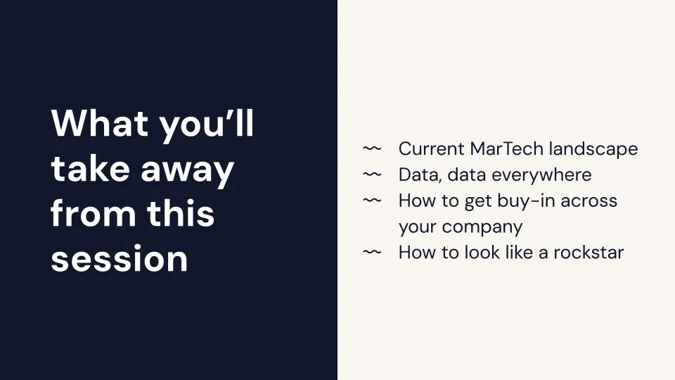
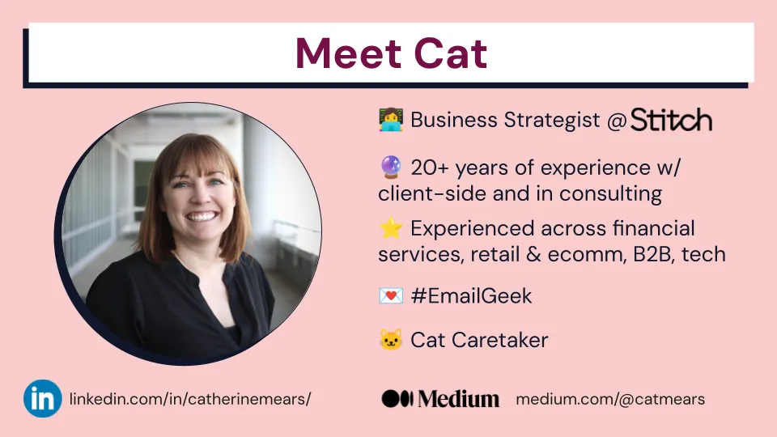
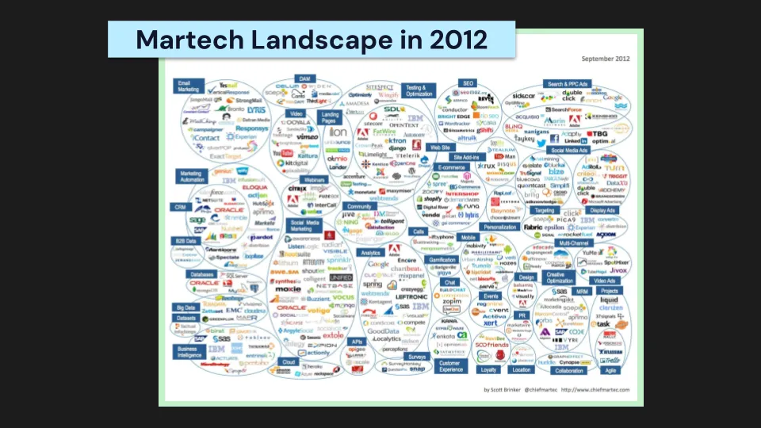
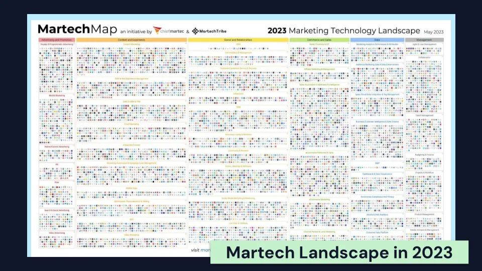
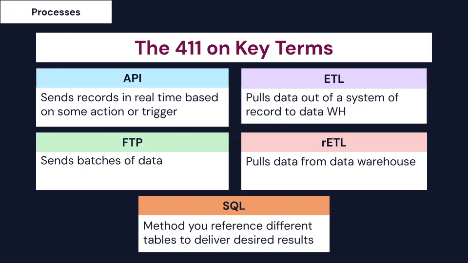
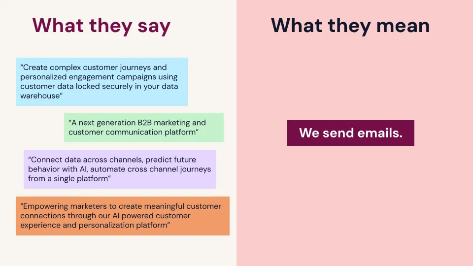
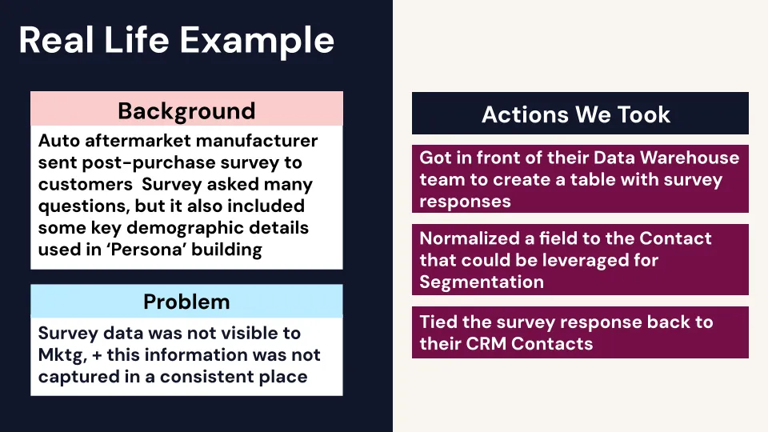
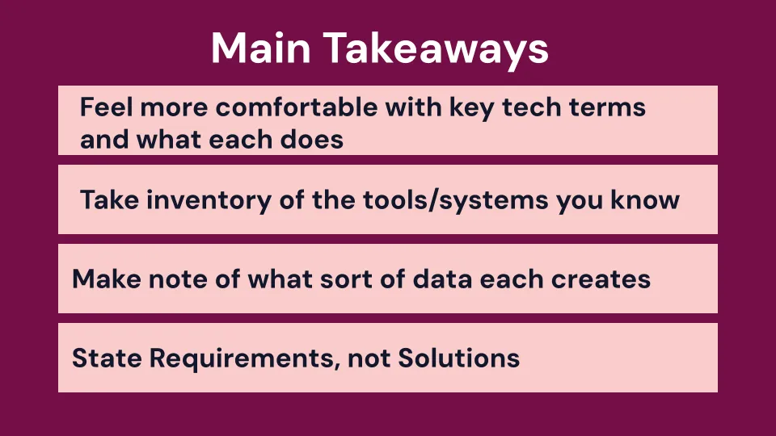

Most teams know first-party data is the key to better email marketing. Too often, though, it sits scattered across tools, trapped in silos, or buried under overlapping platforms, making it nearly impossible to use effectively.
In this practical and refreshingly honest talk, Cat Mears, MarTech Strategist at Stitch, shows how to cut through the noise of 11,000+ MarTech tools and turn first-party data into real marketing power. Drawing on years of in-house and consulting experience, she breaks down what today’s technology landscape looks like, what acronyms like API, ETL, and SQL really mean, and how to get cross-team buy-in (even from finance and IT) to make data-driven email programs a reality.
This is not just a talk about tools. It is a playbook for smarter, scalable, human-centered email marketing in a messy MarTech world.
TL;DR:
- First-party data is gold, but scattered tools make it hard to use.
- Learn what matters in a stack of 11,000+ MarTech platforms.
- Cut through acronyms (API, SQL, ETL) with clear, practical definitions.
- Align marketing with finance, IT, and beyond to prioritize data work.
- Focus on requirements, not shiny tools, to unlock real impact.
👉 Ready to turn your MarTech chaos into email marketing clarity? Dive in.
When Justine told me I was going to be the last speaker at Unspam, I was kind of like, are people’s brains going to be full? Are you going to be sitting there ready for more content, or are you thinking about catching your flight home? With that, how are you going to be able to use your first-party data? We’re talking just first-party data, data that your subscribers give to you in some way, shape, or form to build better marketing programs. Like Justine said, there are sometimes a lot of obstacles. That can be technology, it can be different teams. It can be really hard to get what you need in order to build out cool stuff in our email programs.

What I want to talk about today is basically starting with a foundation. What does marketing technology look like today? What is the landscape? What are you dealing with when you are looking at and hearing from all these different vendors and tools? And then I want to talk through what I think is the art of the possible. What kind of data is generated in what systems? What should you as an email marketer be looking to get out of all these different tools that are in your company’s MarTech stack? And then we’re going to start to pull that together and talk about how you get buy-in from your teams that aren’t even in marketing. They could be in finance, they could be in IT. How do you get them to prioritize your work so that you can then do those really cool emails? I think it was the Dollar Beard Club from Monday that had all those really cool points and stats in it. We talked about Spotify Wrapped and the Grammarly Insights email. All of these emails require data. If you can get that work prioritized, you’re going to be on stage here next year because you’re going to look like an amazing rockstar, right?

So who am I? Why am I up here talking? I clearly need a new headshot, but I’m currently a business strategist at Stitch. We are a Braze partner, so shout out to all of you who are using the Braze platform. I have been in email, both in-house and in consulting, for what feels like a billion years. I’ve worked in retail, software, and SaaS companies. We’ve done B2B selling, B2C selling, and B2B2C selling. It’s a lot. You’ll find me active on EmailGeeks Slack if you ever want to hit me up there. I am also the author of the infamous “Many Hats an Email Marketer Wears.” You can find that on Medium if you want to look at it, and please do connect with me on LinkedIn. I write there too.
Okay, so let’s get into it. I want all of you to sit back and think, where were you in 2012? What were you doing? Some of you may have been in school. I know I wasn’t. I’ve been working for 11 billion years.

I was at conferences like this, and I remember somebody pulled up this slide. This is from Chief MarTech. They put it together every year. This is the earliest one I could find, from 2012. This is a big screen. You can actually read logos on here. You can see categories. You can see at the top how things may have overlapped a little bit. You could actually read this slide. It was overwhelming to me 12 years ago because I thought, “Oh my God, I’m never going to know what all these tools do”. Fast forward 12 years, and lots have happened. We had a global pandemic. No big deal.

This is what it looked like in 2023. Is that real? Yes, it is. This is last year’s. I don’t even know if you can see the categories anymore. Even blown up, it’s super tiny. It’s insane. In 2023, there were over 11,000 logos on that slide. Between 2022 and 2023, a thousand new tools were added. That’s over 11% growth in one year. We keep talking about consolidation in MarTech. It isn’t happening. From what I’m seeing, this is not consolidation. A lot of vendors are offering more and more products or solutions, adding more to their platforms. What does that do? It leads to our big problem: tools in our MarTech stack that do kind of the same thing. Sometimes they do the exact same thing, and a lot of times those systems aren’t even connected to one another. For example, you may have a marketing automation platform that does some lead scoring. You may have an email marketing platform that also sends emails. That’s a lot of stuff. You may have your email platform that also does mobile, in-app messaging, push, and SMS. You may have a marketing automation tool that also does landing pages. You may have website personalization tools. They overlap with one another. We’re all modern email marketers. How do we make sense of 11,000 logos on that marketing technology landscape, and how do we understand what data is going to be important to us for our email program? Not all of those 11,000 logos are relevant. Some of it was just project management stuff.

I pulled out categories that I thought would be relevant for us, things we probably have within our MarTech stacks that generate data we would want to use. I pulled out mobile content, e-commerce platforms, CRMs, CDPs, event management tools, and social media tools. This is a lot to digest. Do you have visibility into what all of these different things do? Do you know who is filling out surveys or what your sales reps are putting into the CRM? It would be nice to know that, right? You could personalize your emails based on what sales is trying to sell. It would be nice if you knew what people are visiting on your website or looking at on your mobile app.

This is our foundation. We’ve got all these different technologies, we’ve got all these different terms, and I wanted to provide a little bit of a behind-the-scenes look into what these crazy acronyms stand for. This is going to set you up for success. I promise it’s going to sound kind of nerdy, but you’re going to feel empowered when you go to your teams and you’re asking for data. When you go to them and they’re talking APIs and SDKs and ETLs, you’re going to be like, what? Let’s break it down. So processes. These are not necessarily actual tools. These are ways in which you can work with the technology that’s available to you.
APIs. My analogy is: you’re on your phone, you pick it up, you call your bestie, you’re talking to them. That’s all an API is doing. It’s just a piece of software talking to another piece of software. They connect with one another. They can do it in real time. Usually it’s trigger-based. Any platform that has an API available to you usually has the documentation to back it up so you can see what they’re making available to you. So it kind of gives you a starting point. That’s a little bit of a cheat sheet. You’ll usually find that in developer documentation.
Then you’ve got the OG, the FTP. Essentially, that is a file transfer protocol. All that does is it generates a file out of one system, throws it on an FTP server, some other system goes and grabs it and imports it. I’ve only ever seen those work on schedules. Maybe some other stuff is possible, but whatever.
I’ve been seeing more and more people talk about ETL and reverse ETL. That’s because in marketing, we’ve been adding new technology to our stacks, bringing in more systems, and learning more about things like data warehouses, data lakes, and data stores. ETL stands for extract, transform, and load. It essentially pulls data out of your source system, like your email platform or whatever, transforms it, maybe normalizes some stuff, and then loads it into the data warehouse. The one thing I want you to take away from this is that a lot of people want to talk about reverse ETL. It is literally the opposite of that. It is just flipping it. It’s taking data out of the data warehouse and sending it to your source system. This is going to be really important for you when you’re talking about getting data into your email platform. That is what reverse ETL is going to do for you.
And then SQL. You’ll actually hear me talk about this when I get to my use case slide, but SQL is just a way that you can take data from different places, stitch it together, and it will spit out the results that you want. Think about your customers, the orders they placed, the products they like, and details about your products in your category. SQL allows you to pull all that data together. Now, this is the fun one. These are the technologies that we’re all kind of learning. I don’t have to tell you about marketing automation platforms—they’re pretty much the same, but with landing pages.

CDPs are kind of hot right now. You’ve probably heard a lot about them. It’s a customer data platform. Without giving away too much of my own opinions, the selling proposition of a CDP is that you can unify all these different types of records back down to a unified profile. So I may be on your website, I may be purchasing in-store, I may be following you on social media. You can bring all that together and start to stitch a good picture of me and all the engagement I have with you.
You’ve also got your content management systems. A lot of CMSs do what are called taxonomies. That’s just keywords, just ways of tagging your content. So now you can see: oh, this white paper is really about this product, this need, or this solution that we offer. If somebody downloaded that white paper, they’re probably interested in that product or solution.
And then lastly, your CRM. Most of you have this. It can be configured in many different ways, so I don’t even know how to talk about it generally. But things I’ve found important: I want to know who’s the lead. I want to know who the current customer. I want to know what sales is talking to them about so that I can also talk to them about the same thing, or at least make sure my message isn’t contradicting sales. I’ve seen people pull in customer service data too, using it with CRMs to suppress people who left a bad review or have a case currently open. These are all things you can weave into your email program. So, how do we apply this technology landscape, this foundation? We start with the end in mind, peeling back the layers of the onion. Think: if I had access to this data, if I could get this information from this system, what would be the purpose of it? Why would I want it? A lot of clients say: I want to increase my click-through rate. I want to reduce my unsubscribe rate. That’s important for us as marketers, but your stakeholders outside of marketing aren’t going to have a clue what that means. You need to connect the dots back to real business impact.
So if you want more relevant emails, more personalized emails that improve your click-through rate, why does that matter? Maybe it drives more people to your website. Maybe it keeps them more engaged with your brand. Maybe it reduces unsubscribes because your acquisition costs are high. You may have to ask yourself this exercise a couple of times, but ultimately you’ll tie it back to your organizational goals. Most companies state them at the start of the year: increase revenue, grow market share, whatever.
I’ve got some examples of this, but if you want to think about it, a solution is really: how are you delivering something? What is the answer to the question? What is the way in which you’re going to solve your problem? But your requirements are more factual statements. There’s less emotion, less conjecture. Your requirements are: what do you need, where does it need to go, how fast does it need to get there, do you want to act on it in real time, or do you not care and can get it every day? And then, why do you need it?
Again, we’re going to tie it back to our business objectives. I bring up the solution because I’ve also seen this a lot. We know our problem—we want this data, it’s over here, we can’t see what’s happening in our different email platforms—so we develop our own solution. And our solution is: all emails need to be sent from the same email platform.
I don’t know, it seems pretty logical to me. Seems like an easy answer. I’m a consultant, so I’ll tell you: it depends. But what happens when you go to your teams and tell them this is what you want to do? This goes back to Robin’s talk about building consensus with your group. You’ve started at the finish line. When you come to them with a solution and you’ve not brought them along with you, they won’t buy in. If you bring people along, they’re going to buy into your vision and your goals, and they’re going to help you.
So typically, we come up with solutions, and I’ll tell you why. It’s because we’re marketers. We get marketed to every day. We know what’s out there in the technology world. I just talked to you about CDPs and CMSs and all these different things. We’re marketers—we’re easy to sell to. Honestly, my checking account is always being debited by somebody I’m buying from because I just saw an email that I thought was really cool.
We like shiny things. We’re marketers, we like shiny things. The problem with shiny things is that maybe your teams aren’t bought into them. Shiny things can be really cool and really hot, and we want to be part of them, right? If they’re really cool… well, cool and hot are two different things. But whatever, if they’re hot on the market, they can be hotter than the inside of a Hot Pocket. Something out there is awesome, and we yearn for it. We just want it so badly because we think: this is going to solve all of our problems. It’s going to be so awesome.

And the reason we think that way is because we get content thrown our way that looks like this. I literally LOL’d when Jared was talking about the gobbledygook earlier because I was like, oh yeah, that’s a slide I have. It’s all this stuff: connecting data across channels, predicting future behavior with AI, and making meaningful customer experiences through a powerful customer platform, and so on. That’s what they say, that’s what they’re selling you.
What do they mean? You’re going to send emails. Maybe some SMS, I don’t know. So you’ve come to somebody, you’ve brought them a solution, but you’re not bringing them along with you. What should you do instead? You come to them with your requirements.
Your requirement is: you need to look at email engagement across those three systems we talked about. Okay, cool. That doesn’t mean anything to the person you’re talking to. So why? What’s important about that? What’s important is that you need to see who’s interacting with your emails. Okay, cool, but I’m not any further connected to you. What’s important about that? You’re delivering relevant content to somebody. Okay, but what’s important about that? You’re increasing click-through rates and ultimately driving more revenue on site.
This is a made-up example. Your example may be trying to increase click-through rates because you want to reduce the time it takes to generate a marketing-qualified lead, or something else. But you’re going to be able to tie it back to something meaningful to anybody in the company.

And so, last thing I want to talk about: a real-life example of something I did with a real company. This company was an aftermarket auto manufacturer. They make very specific, expensive products for cars that you have to get from a dealer. They were the manufacturer, so they would send surveys to people after product registration, because the warranty goes back to them. They then knew who bought the product and would send them a survey.
They wanted to know things like: how was their experience at the dealership? Why did they choose that brand over competitors? And they asked for key demographic information, because this is a niche market with a few important personas. Marketing wanted to target this group, and the data was in the survey responses, but they didn’t know how to access it. They tried capturing it in the CRM in a couple of different ways, but it lived in three different objects across five fields. It wasn’t consistent, it wasn’t normalized, and they didn’t know how to bring it together.
So we said, "You’ve already got a data warehouse. Let’s meet with the team and talk through what’s possible." The CRM data was already going there. We didn’t know about the survey data, but the warehouse team said, "Yep, we can pull that in—maybe with an API, whatever."
We pulled the survey data in. Then we asked, "How do we create a segment based on this that marketing can use to identify these people?" Our solution was to create a normalized, formulaic field that couldn’t be edited manually but tied the data together. We used SQL, built our query, pulled survey responses, opportunities, leads, and everything else. We said, "Give me everybody with this field equal to true." That created a segment for marketing. If a contact had this field marked true, they were in that persona, and marketing didn’t have to do all the extra work to get to that data.
That gave them an actionable segment they hadn’t been able to use before.

So, main takeaways for the day. Ultimately, I hope you go back to your offices with no fear of talking to technically minded teams who may use a lot of jargon and acronyms. Don’t be scared to talk to them. I also want you to know what’s possible—what’s out there—because then you’ll know what you’re up against.
Once you know what you’re up against, you may think: oh cool, that tool is going to solve all my problems. Take a step back. Peel back the layers of the onion. Make note of what’s possible, but then deliver your requirements. Don’t dictate solutions. Teams will want to work with you more. They’ll prioritize your work. You’ve brought them in, you’ve made them part of the process, they’ve been able to provide input, and you may even discover something that wasn’t on your radar that ends up being the actual solution. You’ll get to a better place for it.
I really appreciate you guys.